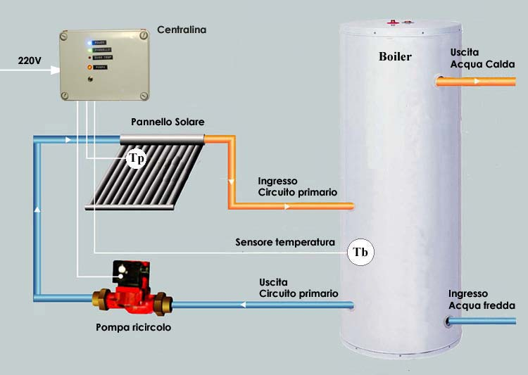
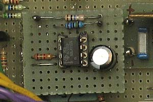
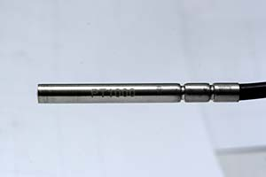
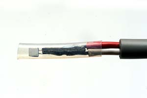
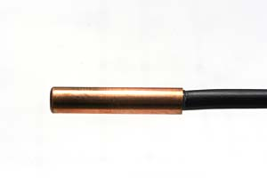
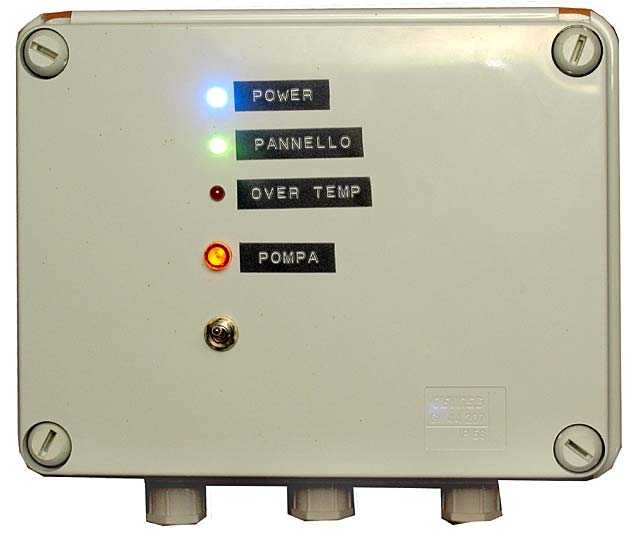
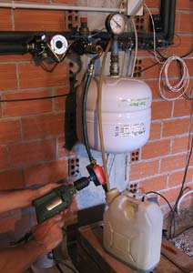

Batteries & energy
Control unit for differential control
solar thermal system temperature. Digital electronic circuit (2011). Analog electronic circuit (2006). "Do-it-yourself" by R.Chirio
Page index
Foreword
January 2006-June 2011
A solar thermal system, suitable for heating water and producing hot sanitary water, is expensive, some savings are obtained by mounting thermal panels with heat pipe evacuated tubes of Chinese manufacture.
{kind=link}
Solar collector consisting of 24 heat pipe vacuum tubes.
Those skilled in electronic assembly can achieve further significant savings by building a simple differential temperature control unit necessary to manage the circulation pump, the only element to manage in a simple-type hot water heating system, not integrated with heating.
In practice the rule to respect is very simple, you measure the temperature of the water in the Storage Boiler and the temperature in the head of the solar panel.
When the temperature at the panel head (Tp) is higher than that of the boiler water (Tb) (by a few degrees) the control unit activates the circulation pump, if the temperature in the panel is lower than the boiler the pump must stop.
For safety, if the temperature in the storage boiler (Tmax) reaches a certain high value (>70°) the pump must stop to prevent the water from reaching dangerous levels.
Simplified hydraulic diagram.

Practical diagram of the solar system for which the control unit described on this page was made.
We have a solar collector composed of 24 heat pipe vacuum tubes, positioned on the roof.
In the attic (floor joist) the hydraulic circuit is arranged connected to the 150Lt accumulation Boiler.
The primary circuit made with 12mm copper pipes, with a 220W 40VA circulation pump, expansion tank, safety valve. It is filled with specific glycol antifreeze liquid for solar systems with antifreeze characteristics and operating temperature up to 120°. The system is pre-pressurized to 2 BAR to prevent boiling.
The electronic system simply needs to compare two temperatures (panel and boiler), which are read by NTC resistances (see notes below) that convert temperature variation into current.
In practice, we don't care to know the exact value of temperatures, we know that panel temperatures can reach even 120° (full summer) and reach -10 at night in full winter.
If the water temperature inside the solar panel is higher than that of the boiler, the circulation pump is activated, so as to transfer heat inside the boiler. When the boiler temperature is higher than the panel, the pump stops, or rather the panel temperature drops to a value lower than that of the boiler.
For safety reaching 70° in the boiler the pump stays off.
To create a simple electronic control it will be enough to have two identical NTC and compare the voltage values applied to the fixed resistors.
Two solutions are proposed here, a recent 2011 version that uses a uP board type Arduino programmable USB with C++ language, this latest version lends itself to further sophisticated implementations, and the first version from 2006 made using an LM358 operational comparator and discrete components.
Circuit diagram digital system Arduino 2009 / Arduino Uno
{kind=link}
Circuit diagram thermal solar panel control. (June 2011)
Virtual differential bridge input configuration.
The input connection is the same as the previous version, so to replace only the control unit, without tampering with the cables and installation.
Capacitors C1 and C2 as well as diodes D5 and D4 provide protection for the inputs, resistors R4 and R5 together with the 2 NTCs form the voltage divider that will provide voltage values inversely proportional to temperature. The configuration chosen has one NTC terminal at ground to reduce the number of wires; just two shielded small-diameter wires (audio type) are needed to carry the signal from outside to the controller.
The two temperature signals are brought to the Arduino analog inputs, A0 and A1, where A0 will read the boiler water temperature and A1 the panel water temperature.
Depending on the program, we will have the D11 and D13 outputs enabled to control the high temperature LED (>70°) and the pump relay command.
The Arduino board requires 12V power supply that we will take from the 7812 regulator output, a 5-10VA transformer will provide power to all the electronics.
The 12V relay must be of good quality with a 16A contact to guarantee long service life, better to use a socketed model to facilitate replacement.
For the assembly and system adjustment notes applies what is written further ahead for the 2006 system.
program for Arduino board 2009 and similar
/*
Solar panel control
June 2011
Roberto Chirio
rev. 1.2
*/
// variables:
int boiler = A0; // NTC Boiler connected to A0
int pann = A1; // NTC Panel connected to A1
int tempB = 0; // variable to store the boiler temperature in degree Celsius
int tempP = 0; // variable to store the panel temperature in degree Celsius
int BBB = 0; // variable
int PPP = 0; // variable
void setup()
{
Serial.begin(9600);
pinMode(11, OUTPUT); // sets the pin 11
pinMode(13, OUTPUT); // sets the pin 13
digitalWrite(11, LOW); // set the 11 off
digitalWrite(13, LOW); // set the 13 off
}
void loop()
{
BBB = analogRead(boiler); // read the boiler temperature
PPP = analogRead(pann); // read the panel temperature
tempB=16666/BBB;
tempP=16666/PPP;
Serial.println("Boiler");
Serial.println(tempB, DEC); // monitor temperature BOILER
Serial.println("Panel");
Serial.println(tempP, DEC); // monitor temperature PANEL
delay(1000); // wait for a second
// check if the Boiler temperature is to high > 70°.
// if it is, the ledTemp is HIGH and pompa off
if (tempB > 70) {
// turn LED HItemp on:
digitalWrite(11, HIGH);
// turn pump OFF:
digitalWrite(13, LOW);
{ goto fineloop;}
}
// check if the panel temperature is <= 20°.
// if it is, the pompa is LOW:
if (tempP <= 20) {
// turn pump off:
digitalWrite(13, LOW);
{ goto fineloop;}
}
// check if the temp panel is > of temp boiler
// if it is, the pompa is on:
if (tempP > tempB) {
// turn pump on:
digitalWrite(13, HIGH);
// turn LED OFF:
digitalWrite(11, LOW);
delay(15000); // wait for 15 second
}
// check if the temp panel is <= of temp boiler
// if it is, the pompa is off:
if (tempP <= tempB) {
// turn pump OFF:
digitalWrite(13, LOW);
// turn LED OFF:
digitalWrite(11, LOW);
}
fineloop:;
}
Circuit diagram analog system 2006/2007
{kind=link}
Electrical circuit for thermal solar panel control. (New version Sept. 2007) (Old diagram)
{kind=link}
Differential bridge input configuration; the first comparator changes its output state if temperature Tp increases because the NTC resistor drops, bringing the negative input lower and the positive higher; consequently transistor Q2 is driven, which excites the pump relay.
On the contrary, if Tb is higher the + input is brought low and the output goes to zero and the pump command transistor opens stopping the pump.
The second comparator reads the NTC Boiler voltage when the value reaches the preset value of P1, it commands Tr Q1 which blocks Q2, the relay interrupts the pump's power supply.
The capacitor and diodes on the input serve as protection for discharges that could come from the sensor cables, optionally use MOV or TVP from 24-40V.
The R10 resistor in series with the NTC TP serves to add about +6° of temperature to the panel, so that when the pump starts the water is definitely warmer than that in the accumulation boiler. The value is determined by the type of NTC used, therefore in case of uncertain behavior, either eliminate the R10 or replace it with a 2K trimmer and measure the operating temperature.
After the comparator we find the switch for the pump command full time or 3 minutes ON / 12 minutes OFF.
The astable timer realized with the NE555 receives power directly from the LM358 output (a few mA consumption). The 555 output goes high immediately and starts the ON cycle of about 3 minutes determined by R3 2.7M ohm while the OFF time is determined by R4 10M ohm. The C1 capacitor 100uF must be of good quality, preferably tantalum MIL version. If you want different activation times, act on the value of these components.
In case the panel temperature drops during the ON or OFF cycle, the timer is immediately reset as the power goes to 0V.
The 220V power circuit must be built separately with 220V/14V 5VA transformer, rectifier bridge and filter capacitor.
For the list of components refer to the enlarged circuit diagram.
3 minute timer ON - 12 minute OFF (To be used during the warmest summer period)
In this improved version of the solar control unit, I have added the pump command timer which during the hot panel phase, therefore heat transfer, activates the pump for 3 minutes and for the following 12 remains stopped. This solution gives us some advantages during the summer period, more suitable for Heat-pipe type panels as they perform better if temperatures are higher. If the pump circulates continuously, the panel temperature will never be able to reach the heat peak, so the 12 minute pause allows the temperature to rise, then to transfer the accumulation of heat in the following 3 minutes. Another advantage is that of making the pump work less and consequently a lower electrical cost. The pump works only 1/4 of the time compared to Full. With a 60VA pump we save about 10 euros/year of energy, plus the pump will last longer.
I remind you that to have economic advantages on installation, the costs of this system should be amortized in 20 years, therefore a circuit costing 5 Euros will save us 200 euros in the coming years....

Realization of NTC probes for temperature reading Tp and Tb
If you don't want to buy temperature probes it's easy to make them.
I recovered NTC temperature sensors from motherboard traces; they are rated 10kΩ at 25°C, come in green or blue color with a white dot; it's important to recover two perfectly identical units, test the value with a multimeter. For a comparative measurement, immerse both NTCs in silicone grease and after 10 minutes measure the resistance of both; the difference must not exceed 2%.
For this realization I used two Blue NTC with white dot.
{kind=link}
These NTC thermistors are small, therefore suitable for making temperature probes, to be inserted in the solar panel in the appropriate 6mm hole near the water passage.
Note that the panel sensor is subjected to high temperatures, above 120°, the connecting cables in this case must be suitable for high temperatures, therefore with Teflon or Silicone insulation. Two wires of small-diameter enameled copper for windings can also work well for the hot part of the solar panel.
The small NTC does not suffer from these temperatures as it can be soldered at 220°.
{kind=link}
To finish and protect the probe, it must be covered with heat shrink tubing.
The best solution is to put some silicone grease (cover the NTC with conductive CPU grease) before heating the heat-shrink tubing. This grease prevents moisture entry and improves thermal distribution inside.
The final diameter must be less than 5 mm, to facilitate insertion in the appropriate slot of the panel and Boiler.
The sensor for the Boiler is subjected to lower temperatures, it is however not a reason not to make it carefully.
{kind=link}
The length of the temperature cables can also exceed 10 meters, in practice if there are no strong electric fields, there should be no problems. For the solar panel connection I used shielded cable type RG58, so as to have low voltage drops.
Use of commercial probes.
PT1000 suitable for solar panel up to 180°
PTC probe 1000 ohm at 25°C diam. 5.0mm
It is a PTC, but it can work with this circuit, you need to jumper R10.
The two identical probes must be swapped on the terminal block, being positive variation with temperature increase, they increase resistance; therefore the connection must be inverted. The boiler terminal block becomes the panel and vice versa. Eliminate or reverse the comparator for 70°.

PT1000 suitable for solar panel up to 180°
PTC probe in teflon and silicone, 1000 ohm at 25°C diam. 4.6mm
It is a PTC, but it can work with this circuit, you need to jumper R10.
The two identical probes must be swapped on the terminal block, being positive variation with temperature increase, they increase resistance; therefore the connection must be inverted. The boiler terminal block becomes the panel and vice versa. Also eliminate or reverse the comparator for 70°.

NTC 10K suitable for solar panel up to 120°
NTC probe 10000 ohm at 25°C diam. 6.5mm Length 32mm
The two identical probes work without modifications to the circuit.

Realization
Building the solar differential temperature control unit requires good knowledge of electronics, equipment and experience in electronic assembly is necessary.
No liability is accepted for damage to things, to people and for improper use of the implementation.
{kind=link}
The control unit running inside a protection box.
On the front are placed the indication LEDs: Power, Panel hot, pump ON and Overtemperature 70°
An external switch to manually force the pump is useful during testing or for subsequent verifications.

Important a good ground connection, let us not forget that the solar panel is on the roof and in summer there are thunderstorms with electrical discharges.
The entire metal structure of the solar panel must be grounded with a large gauge conductor.
To know the water temperature I installed a digital thermometer that reads the temperature at the same point where the Boiler NTC is attached.
Final thoughts
The panel or rather the two 12-tube panels are installed in Turin and work excellently.
From late May the water temperature (Storage Boiler) is always above 45° with peaks at 65° in July. It is therefore necessary to intervene with the cold water mixer positioned at the outlet of the storage boiler.
During winter, say December, January and February...you don't get anything done. (To get any result during winter you need a greater number of tubes, of better quality and position everything South with at least 45° elevation.)

The circulation pump is a normal 3-speed circulation pump, used in radiator heating systems, the smallest 220V one is fine, as it must move 10-20 liters of glycol..not
All tubes are copper; it's good to use the smallest possible tubes, 12mm, even 10mm is better, meaning less mass, less exposed surface, thus fewer losses. All the copper tubing is covered with black neoprene insulating tubes; externally, additional coverage with aluminum tape.
Antifreeze glycol in 25-30 liter containers is found at hydraulic wholesalers that handle solar systems, almost all of them. In areas where minimum temperatures drop only slightly below zero, it is conceivable to dilute the glycol with water, this to make the pump work less, which with denser glycol tends to heat up more.
In practice only 2Atm is used since the maximum temperatures are not so high. You must calibrate the expansion tank to 2Atm and the system filling is done with one of those small pumps that are fitted on the drill, the drill must be 220V and turn fast otherwise it doesn't reach the necessary pressure.
To fill the system, you must have a faucet with valve, near the pump and a relief valve at the highest point of the system with a tube that brings back down into the glycol container, when the system is full, liquid will come out of the tube, let it bubble for a few minutes until the air bubbles are gone, then close the relief and continue pumping until the pressure rises and no longer moves from 2Atm. Quickly close the charging faucet and the system is ready. After a few hours of being pressurized, check if there are leaks and liquid dripping. If all the connections are good, the system must remain pressurized for a long time. Check periodically the maintenance of the pressure.
{kind=link}
With the 3/12 timer function enabled, the water temperature will be lower, but still sufficient for daily use by three people. Optionally you can lengthen the ON time to 6 minutes (set R3 = 5.6M ohm), or also to 12 min. ON and 12 min. OFF (set R3 = 10M ohm), still achieving a 50% savings in pump energy consumption.
Tips:
Position the panels for the winter angle (where and when possible), this to recover something during winter, better to use panels with vacuum tubes of diameter 57 or 70mm. which have better efficiency than 47mm.
System with circulation tubes as short as possible for low losses. Pay careful attention to thermal insulation of tubes, pump and valves; no hot metal element should be exposed. An infrared thermometer is useful for checking and finding heat losses.
Use a daily timer to activate the general power supply, say from 10 to 17 in summer and 11 - 15 during winter, so at night no energy is consumed by the control unit. Furthermore during the summer by reducing the on times, you can save energy for the pump by keeping the system on for only a few hours.
© Roberto Chirio: all rights reserved.